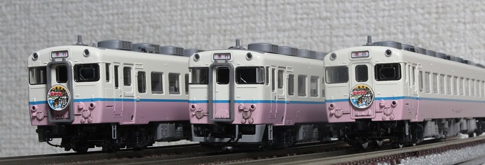
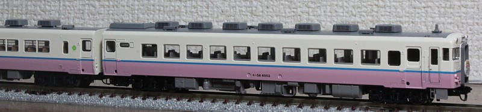
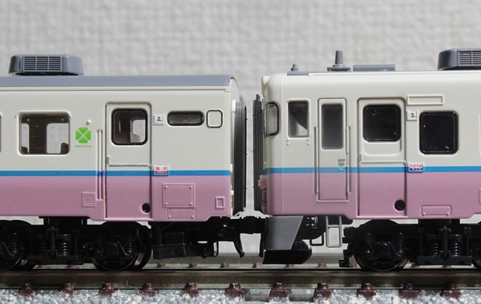
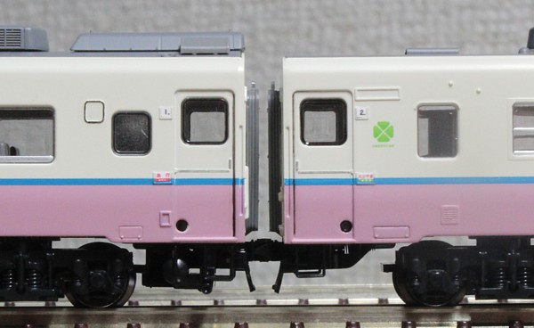
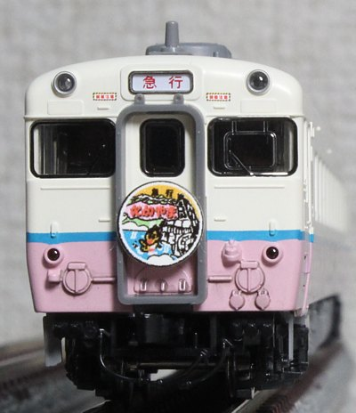
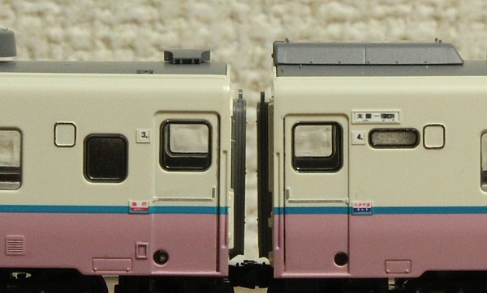

キハ58系の急行たかやまです。
京都〜大阪間で乗った記憶がおぼろげながらあるのですが、1999年廃止なので
一体いつ乗ったのかが思い出せません。記憶ねつ造?


先頃再生産になったトミックスの製品です。
基本・増結で全部購入してます。ホンモノは基本4両、多客期では6両もしくはそれ以上でした。
手元の模型では動力車の位置と、2個しか入ってないヘッドマークを 編成両端につけようとしているため6両固定編成になってます。
ホンモノのほうは7両、8両の場合もあったようで、
この場合は更に一般色のキハ58/28が増結されます。ヘッドマーク分売されないかな…

トイレ臭気抜き窓に黒、ドアレールに銀を入れてます。
凹んだ部分に回ってない印刷をタッチアップしました。同じ色を作るのに一苦労でしたが、 ライトグレーにマゼンタ＋青少々でそれっぽい色になりました。
軽めにスミ入れもやってます。

自作サボ(種別)と号車番号札もつけました。
各車、大阪寄りが(たかやま/指定席)、飛騨古川寄りが(急行/EXPRESS)だったようです。
色を見れば急行だとわかるのに、それでもサボの挿し方が国鉄時代と変わってないあたりがなかなか素敵です。
行先も作りたいのですが、 「飛騨古川」が横に縮小しないといけないので手元のExcelでできない…

意外と目立っている「架線注意」を付けました。くろま屋さんのインレタ(汎用品)です。
でもWebで見かけた全部の写真についているわけではなかった(車両ごと?時期により違う?)ので、 一部の車両への取り付けにしました。簡単バリエーション。

行先が欲しくなり、飛騨古川のサボも作りました。
Excelでは横方向の縮小ができないので、今回はWordのオートシェイプで。 最初はドローソフト(inkspace)で作り、パソコンの画面上では超いい感じだったのですが印刷がネックに。 家庭用プリンタでは画像化してからやらないと印刷できないので、どうしてもぼやけてしまいます。
「大阪」は読めますが飛騨古川は雰囲気程度、でしょうか。
こちらにおいてますのでよろしければどうぞ。
あ、枠に対してサボが短いのは切断精度の問題です。写真に撮ると目立ちますね。。。